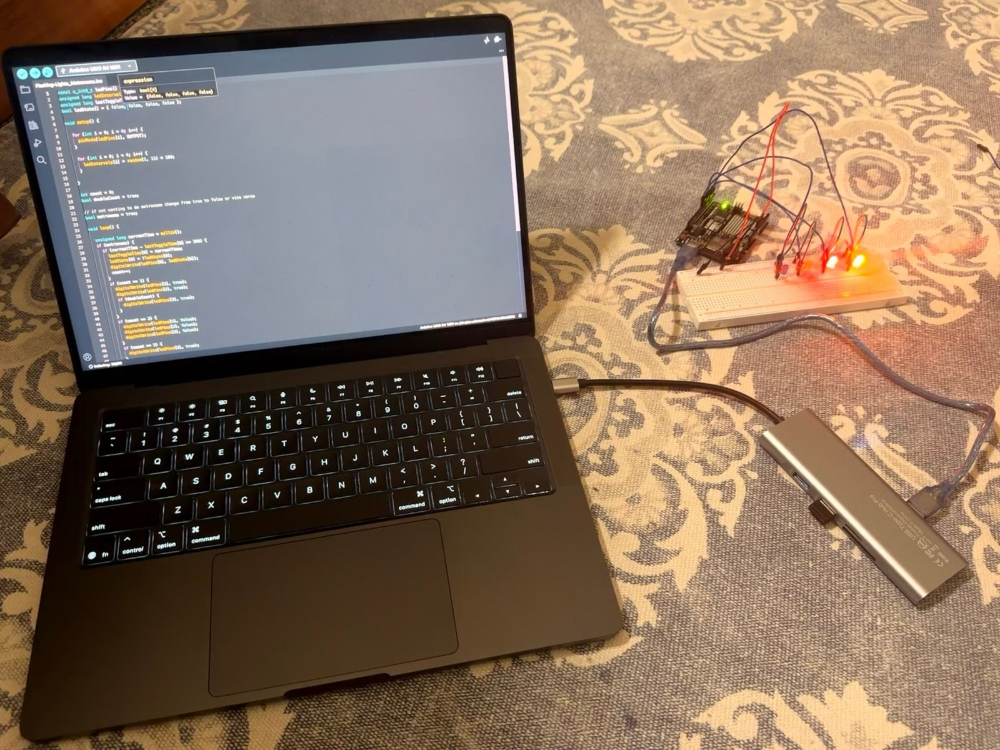

Flashing Lights Metronome
A digital version of an Arduino project I made.
Speed
Running
LED on pin 3
Pin 3
LED on pin 5
Pin 5
LED on pin 7
Pin 7
LED on pin 9
Pin 9
count
millis()0
count0
LEDs on0 / 4
ModeFlashing
How it works
The sketch
Download .inoThe part of loop() that isn't running in this mode is dimmed.
Loading…The real board

Keyboard: Space run/pause · R reset · M switch mode